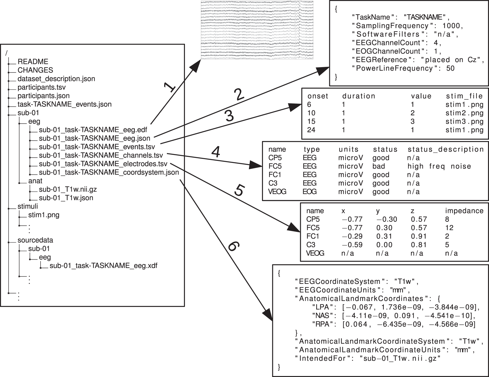
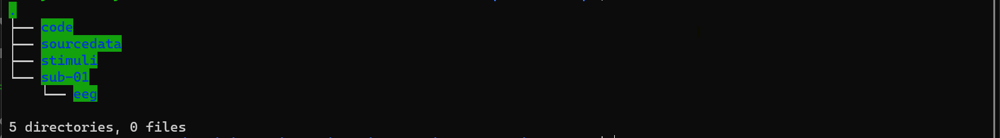
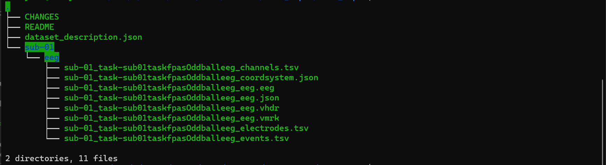
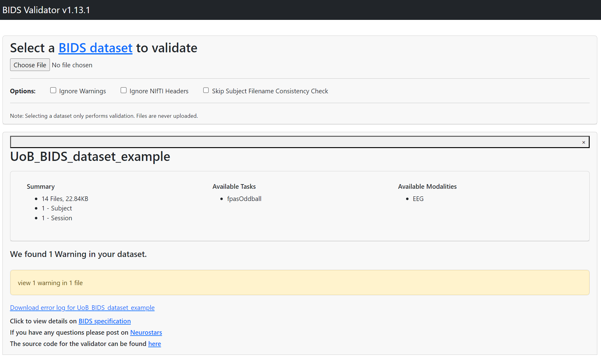

Bristol GIN for Electroencephalogram Data#
Create GIN Account#
In order to be able to follow this tutorial, you need to have a GIN account either on Bristol GIN or on the public GIN service. GIN web interface documentation has it all explained here.
After creating the account, login to it by typing:
gin login
Download Mock Data#
We are going to download a small electroencephalography (EEG) recording dataset example available in dervinism/UoB_BIDS_dataset_example repository. To get the data, type in the lines below to your terminal:
gin get dervinism/UoB_BIDS_dataset_example
cd UoB_BIDS_dataset_example
gin get-content
We are going to work with the source data stored in UoB_BIDS_dataset_example\sourcedata folder and in the process convert it into the folder structure contained within UoB_BIDS_dataset_example.
Here is a brief description of the data. Participants in this study were wearing EEG caps and the data was acquired while they were listening to a stream of syllables composed of standard and deviant sounds presented ad different fixed frequencies (e.g. [ba-ba-ba-ba-pa-ba-ba-ba-ba-pa-ba-ba…]). The EEG experiment was run using the so-called Frequency Tagging, by combining an oddball paradigm with Fast Periodic Auditory Stimulation (FPAS), a technique used to explore passive and automatic perception. The task tested the participants’ ability to perceive non-native phonological contrasts. Data was collected using Brain Vision recorder.
Create BIDS Compatible Folder Structure#
For EEG data management we are going to follow the Brain Imaging Data Structure (BIDS) format. It is the most widely used format within the field of neuroimaging, including EEG recording. The format itself is a folder structure rather than a file format and it supports the use of multiple different commonly used file formats within the neuroimaging field. Specifically regarding the EEG data, the European Data Format (EDF), BrainVision Core Data Format, the format used by the MATLAB toolbox EEGLAB (.set and .fdt files), and the Biosemi format (.bdf) are all supported. Examples of the BIDS folder structure used in imaging studies (Figure 1) and, more specifically, in EEG studies (Figure 2) are provided below.
{kind=link}
Figure 1. BIDS Folder Structure for Neuroimaging Data Example
{kind=link}
Figure 2. BIDS Folder Structure for EEG Data Example
In our case, we are going to create 4 new folders and one subfolder within our new data repository as shown in the figure below.
{kind=link}
Figure 3. Create BIDS Folder Structure Suitable for our Data
Copy and Edit Data Files#
After creating BIDS compatible folder structure, copy/move data and analysis files to appropriate folders. Jupyter Notebook containing Python analysis script should be placed in the code folder. LICENSE and README files should be place at the root directory. The raw data files - Dario_EXP4_P_03.eeg, Dario_EXP4_P_03.vmrk, and Dario_EXP4_P_03.vhdr - should be placed inside sub01/eeg folder.
The raw data files should follow the following convention:
sub-<label>[_ses-<label>]_task-<label>[_acq-<label>][_run-<index>]_eeg.<extension>
Hence, we rename our data files to comply with the naming convention as follows: sub-01_task-fpasOddball_eeg.eeg, sub-01_task-fpasOddball_eeg.vmrk, and sub-01_task-fpasOddball_eeg.vhdr. The full documentation on BIDS compatible EEG data structure can be found here.
Finaly, edit data files to replace any obsolete paths with corrected paths as in the file sub-01_task-fpasOddball_eeg.vhdr lines
DataFile=Dario_EXP4_P_03.eeg
MarkerFile=Dario_EXP4_P_03.vmrk
should be replaced by
DataFile=sub-01_task-fpasOddball_eeg.eeg
MarkerFile=sub-01_task-fpasOddball_eeg.vmrk
Do not forget to place all of the original files within the sourcedata folder.
Create BIDS-compatible Metadata Files#
Our data was acquired and saved in the BrainVision Core Data Format. This is convenient because we can rely on BrainVision’s BIDS converter to generate correct metadata files. The converter is available here and can be executed after downloading without the need to install it. Simply call the executive file in the Windows command line and indicate the header file and and the destination folder as below
BV2BIDS.exe -hdr <repository-root-directory>/sub01/eeg/sub-01_task-fpasOddball_eeg.vhdr -dst <destination-folder>
The BIDS converter should generate the files shown in the figure below.
{kind=link}
Figure 4. Output of BrainVision’s BIDS Converter
Now copy CHANGES and dataset_description.json files to the root repository directory. Files inside sub-01/eeg folder should be copied to the corresponding folder within the data repository folder. Do not forget to edit dataset_description.json file to indicate the repository name. The coordinate system inside sub-01_task-sub01taskfpasOddballeeg_coordsystem.json file should be changed from BESA to CapTrak. Feel free to edit other JSON files. The final repository should have all the files listed in the figure below.
{kind=link}
Figure 5. Final EEG Data Repository Structure
Validate your BIDS EEG Dataset#
You should always check whether your newly created BIDS dataset is actually valid. BIDS validators can be downloaded and the dataset can be tested locally. Alternatively, a very convenient way is to use a web validator available here. After running our dataset validation, there should be no major errors as in the output below.
{kind=link}
Figure 5. Final EEG Data Repository Structure
Upload your BIDS EEG Dataset to GIN#
Uploading a BIDS-compatible data repository to GIN is identical to uploading datasets acquired in other data recording modalities. Examples of how to do this are available for other modalities and extensive tutorials describing how to use GIN are available for both command line and web interfaces.
Once the repository is uploaded, anyone who wishes to download can run the analysis code inside the jupyter notebook /code/FREQUENCY_TAGGING-ANALYSIS-GIN_VERSION.ipynb on their system as the file currently stands. Ideally, should run without errors if correct dependencies are installed.
Resources#
This tutorial touches the BIDS data format only briefly. Extensive discussion of the BIDS data folder format is provided in the official website of the format and in its official documentation. It is also useful to read the original paper that introduced BIDS for neuroimaging data and a companion paper that described the application of BIDS to the EEG data.
Acknowledgements#
This tutorial was made possible with the kind help of Dario Fuentes Grandon who provided EEG recording data samples.